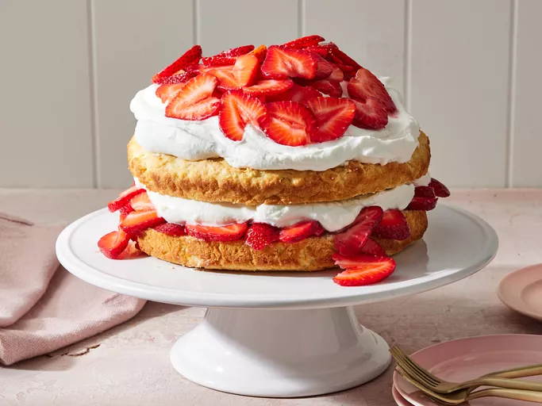

Home
Strawberry Shortcake

Description
This strawberry shortcake is the classic, biscuit-style shortcake — not the pound cake
variety. The cake is sliced in half and layered with sweet juicy strawberries and whipped
cream for a delicious summer treat!
Ingredients
- 6 cups fresh strawberries
- ⅓ cup white sugar
- 2 ¼ cups all-purpose flour
- ¼ cup white sugar
- 1 tablespoon baking powder
- ¼ teaspoon salt
- ½ cup butter cold unsalted butter, cut into ½-inch pieces
- 1 large egg, lightly beaten
- ¾ cup half-and-half
- 2 teaspoons vanilla extract, divided
- 1 ½ cups whipped heavy cream
- ¼ cup powdered sugar
Steps
Gather the ingredients.
Preheat the oven to 425 degrees F (220 degrees C). Grease an 8-inch cake pan with
butter and lightly dust with flour.
Slice the strawberries and toss them with 1/3 cup of white sugar. Set aside.
Combine flour, 1/4 cup of white sugar, baking powder, and salt in a medium bowl; cut
in butter with a pastry blender or two knives until mixture resembles coarse crumbs.
Make a well in the center of mixture; add beaten egg, half-and-half, and 1 teaspoon
vanilla. Stir mixture until just combined and no dry spots remain, being careful not
to mix too much.
Spoon batter evenly into prepared cake pan.
Bake in the preheated oven until a toothpick inserted into the cake comes out clean
and top is golden brown, about 18 minutes. Let cool partially in cake pan, about 10
minutes. Flip cake onto a clean work surface.
Meanwhile, beat heavy cream, powdered sugar, and remaining 1 teaspoon vanilla with an
electric mixer on medium-high speed until soft peaks form, about 3 minutes. Set aside.
Cut partially cooled cake in half horizontally, making 2 layers; set top layer aside.
Drain reserved strawberries in a colander placed over a small bowl, reserving any
juice. Brush strawberry juice evenly over top of bottom cake layer. Evenly arrange ½
of the drained strawberries over bottom layer of cake.
Spread ½ of whipped cream evenly over strawberries; place top cake layer over whipped
cream. Top with remaining strawberries and whipped cream.
Enjoy!